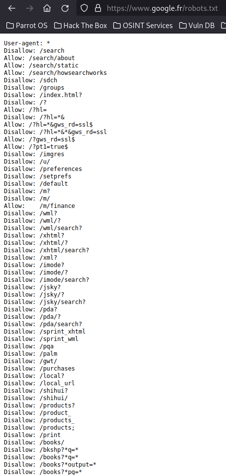

Et oui ! Il s'agit bien d'un fichier .txt. En réalité, le navigateur web peut lire tout un tas de fichier. On a les fichiers HTML, CSS, Javascript, PHP (pour les pages web), mais aussi les fichiers contenant des images ! Car sinon il ne pourrait pas afficher d'images. Lire un fichier rempli de texte ne devrait pas poser de problème à votre navigateur.
Ici ! Si Vous avez cliqué sur le lien précédent, alors vous êtes tombés en plein dans un fichier robots.txt. Ce fichier s'adresse directement aux robots visitant la page web pour pouvoir ensuite référencer correctement le site en question. robots.txt est un fichier servant à donner des ordres aux robots visitant la page, pour leur demander d'ignorer ou non des pages, etc... On ne regardera pas plus en détail le contenu du fichier (enft là il est 4h50 du mat j'ai plus le temps j'ai pas dormi aidez-moi). Si vous souhaitez tout de même avoir plus de détail, cliquez-ici !
